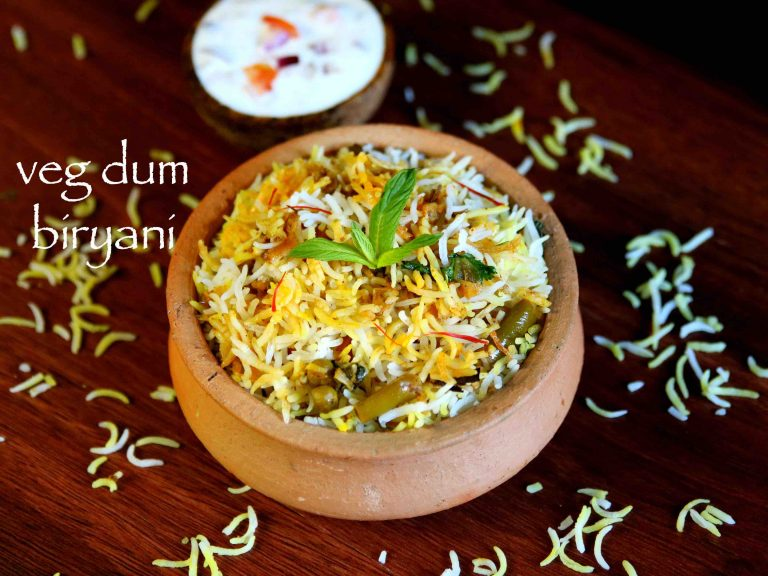
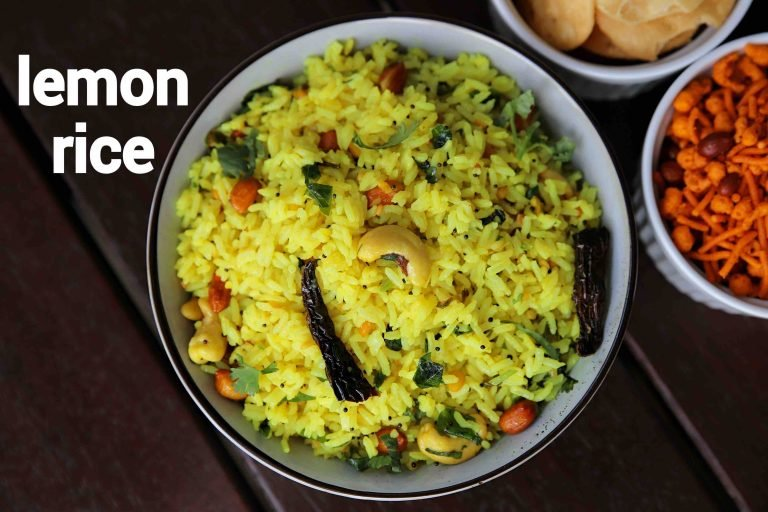
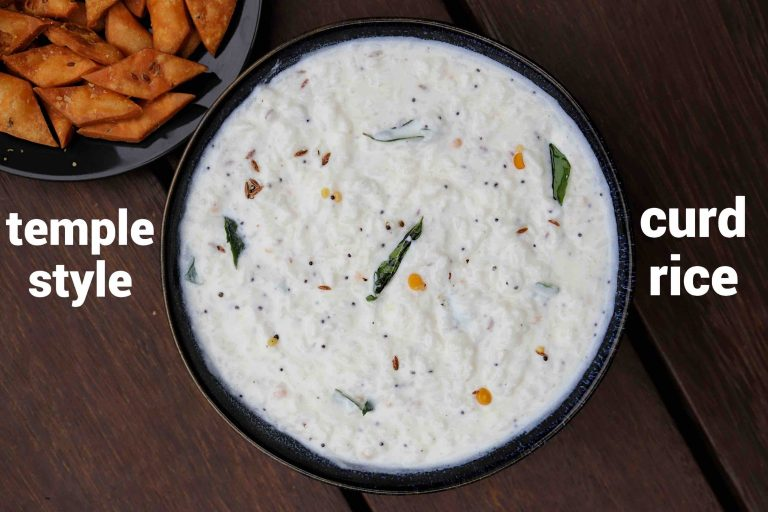

Veg Dum Biriyani

INGREDIENTS:
8 cups water
• ▢2 bay leaf / tej patta
• ▢1 inch cinnamon stick
• ▢½ tsp cloves
• ▢1 star anise
• ▢½ tsp pepper
• ▢2 tsp oil
• ▢1 tsp salt
• ▢1½ basmati rice (soaked for 20 minutes)
• for biryani gravy:
• ▢2 tbsp oil
• ▢1 tbsp ghee / clarified butter
• ▢1 bay leaf / tej patta
• ▢2 inch cinnamon stick
• ▢½ tsp cloves
• ▢1 star anise
• ▢1 tsp shah jeera / caraway seeds
• ▢4 cardamom
• ▢1 onion (finely chopped)
• ▢1 tsp ginger-garlic paste
• ▢2 cups mixed vegetables (carrot, gobi, peas, potato, beans, chopped)
• ▢1 cup curd / yogurt
• ▢1 tsp kashmiri red chilli powder
• ▢½ tsp turmeric / haldi
• ▢2 tsp biryani masala powder
• ▢1 tsp salt
• ▢2 tsp coriander-mint paste
• ▢1 cup water
• ▢15 cubes paneer / cottage cheese
• other ingredients:
• ▢¼ cup mint / pudina (chopped)
• ▢¼ cup coriander (chopped)
• ▢1 tbsp ghee / clarified butter
• ▢½ cup fried onions / barista
• ▢¼ cup saffron water
• ▢pinch of biryani masala powder
• ▢wheat dough (to seal)
INSTRUCTIONS:
1) firstly, in a thick bottomed deep vessel spread in a layer of prepared biryani gravy.
2) further layer with cooked rice.
3) also spread few chopped mint, coriander, fried onions and saffron water.
4) as a third layer, spread biryani gravy.
5) repeat layering with cooked rice, saffron water, fried onions and biryani masala.
6) also top with a tbsp of ghee, mint and coriander.
7) close and seal with dough.
8) simmer for 15 minutes.
9) finally, serve hyderabadi dum biryani with raita or mirchi ka salan.
Jeera Rice

INGREDIENTS:
• ▢½ cup basmati rice
• ▢1 tsp oil
• ▢½ tsp salt
• ▢1 tsp ghee / clarified butter
• ▢1 tsp cumin / jeera
• ▢2 tbsp coriander (finely chopped)
• ▢water (to soak & boil)
INSTRUCTIONS:
1) now in a large heat 1 tsp ghee and splutter 1 tsp cumin seeds.
2) now add in cooked basmati rice, ¼ tsp salt and mix gently.
3) finally, add 2 tbsp coriander leaves and enjoy jeera rice with dal.
Lemon Rice

INGREDIENTS:
• ▢2 tbsp peanut
• ▢2 tbsp cashew
• ▢1 tsp mustard
• ▢1 tsp urad dal
• ▢1 tsp chana dal
• ▢1 dried red chilli
• ▢1 inch ginger (finely chopped)
• ▢2 chilli (finely chopped)
• ▢pinch hing / asafoetida
• ▢few curry leaves
• ▢¼ tsp turmeric
• ▢2 cup cooked rice
• ▢½ tsp salt
• ▢2 tbsp coriander (finely chopped)
• ▢2 tbsp lemon juic
INSTRUCTIONS
1) firstly, in a large kadai heat 2 tbsp oil and roast 2 tbsp peanut.
2) also, roast 2 tbsp cashew until it turns golden brown and crunchy.
3) keep the fried peanuts and cashews aside.
4) in the same oil add 1 tsp mustard, 1 tsp urad dal, 1 tsp chana dal, 1 dried red chilli.
5) also add 1 inch ginger, 2 chilli, pinch hing and few curry leaves.
6) splutter the tempering on medium flame.
7) add in ¼ tsp turmeric and saute slightly.
8) further, add 2 cup cooked rice and ½ tsp salt.
9) mix well making sure everything is well combined.
10) also, add 2 tbsp coriander and 2 tbsp lemon juice. mix well.
11) finally, enjoy lemon rice with papad or pack for lunch box.
Curd or Yogurt Rice

INGREDIENTS:
• ½ cup rice (rinsed)
• ▢1½ cup water
• ▢½ cup milk
• ▢1 cup curd / yogurt (thick)
• ▢½ tsp salt
• ▢2 tbsp oil
• ▢1 tsp mustard
• ▢1 tsp cumin / jeera
• ▢1 tsp urad dal
• ▢1 tsp chana dal
• ▢pinch hing / asafoetida
• ▢½ tsp pepper (crushed)
• ▢few curry leaves
INSTRUCTIONS
1) firstly, in a pressure cooker take ½ cup rice and add 1½ cup water.
2) pressure cook for 5 whistles or until rice is cooked well.
3) once the pressure is released open the cooker and mash the rice smooth.
4) transfer to the bowl and add ½ cup milk.
5) mix well making sure rice is well combined. adding milk helps to soften rice and also prevents
curd rice from turning sour when kept for long time.
6) allow it to rest for 5 to 10 minutes or until its cooled completely.
7) further, add 1 cup curd and ½ tsp salt. mix well.
8) now prepare tempering by heating 2 tbsp oil.
9) add 1 tsp mustard, 1 tsp cumin, 1 tsp urad dal, 1 tsp chana dal, pinch hing, ½ tsp pepper and few
curry leaves.
10) splutter the tempering and pour over the curd rice.
11) mix well making sure everything is well combined. for prasadam do not add chilli, ginger and
coriander.
Dal Khichdi

INGREDIENTS:
• ½ cup rice
• ▢½ cup moong dal
• ▢1 tsp ghee
• ▢¼ tsp turmeric
• ▢½ tsp salt
• ▢3¼ cup water
other ingredients:
• ▢2 tbsp ghee
• ▢1 tsp cumin
• ▢1 bay leaf
• ▢pinch hing
• ▢1 onion (finely chopped)
• ▢1 tsp ginger garlic paste
• ▢1 tomato (finely chopped)
• ▢¼ tsp turmeric
• ▢1 tsp chilli powder
• ▢½ tsp garam masala
• ▢½ tsp salt
• ▢1 cup water
• ▢2 tbsp coriander (finely chopped)
INSTRUCTIONS:
1) firstly, in a large bowl rinse and soak ½ cup rice, ½ cup moong dal for 10 minutes.
2) in a cooker heat 1 tsp ghee and add soaked dal and rice.
3) saute for 2 minutes, or until the dal turns aromatic.
4) now add ¼ tsp turmeric, ½ tsp salt and 3¼ cup water. mix well.
5) cover and pressure cook for 5 minutes.
6) in a large kadai heat 2 tbsp ghee. add 1 tsp cumin, 1 bay leaf and pinch hing.
7) saute on low flame until the spices turn aromatic.
8) now add 1 onion, 1 tsp ginger garlic paste and saute well.
9) further, add 1 tomato and saute until the tomato turns soft and mushy.
10) keeping the flame on low add ¼ tsp turmeric, 1 tsp chilli powder, ½ tsp garam masala and ½ tsp
salt.
11) saute for 2 minutes or until the spices turn aromatic.
12) now add cooked rice and dal.
13) also, add 1 cup water and mix well adjusting consistency as required.
14) cover and simmer for 5 minutes or until the flavours are absorbed well.
15) finally, add 2 tbsp coriander and enjoy dal khichdi with pickle and curd.